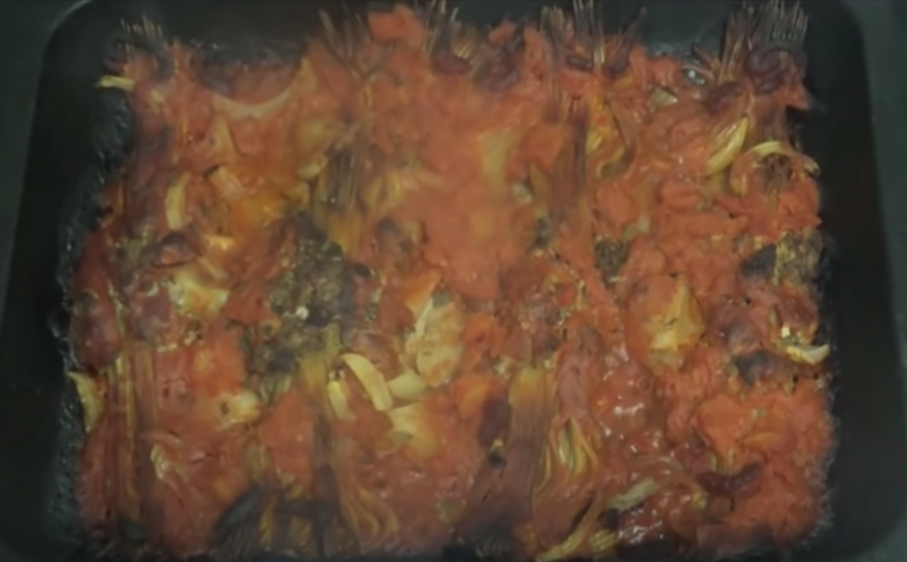

A different Spaghetti Bolognese

Minced meat on spaghetti sticks or whatever you wanna call 'em
Hi people and I'm back cooking..... Again. And today I'm going to be doin a different form of spaghetti bolognese
Ingredients
- 400gr minced meat
- 2 eggs
- Spaghetti sticks
- An onion
- Tomato sauce
- Maybe we'll open a can of tomatoes
Steps
- First of all, we're gonna beat some eggs up
- And I got some spaghetti sticks here... Or whatever you wanna call em
- Right, I'm gonna put these egg in the.. Minced meat.. And I'm gonna mix the minced meat around
- And then what I'm going to do is.. Take me spaghetti sticks out.
- I don't even know how to do this.. I've seen it on video but I don't know how to do it..
- Grab the sticks.. Grab the soggy minced meat.. And put it around the sticks
- Then put it in the pan to go in the oven after putting soggy minced meat around 4 bundles of spaghetti sticks
- Pour some tomato sauce in there, as the guy in the video did it
- Remember to save some tomato sauce for after the first round of the oven
- Put them in the oven for about 20 minutes. Then we're gonna put the onion in
- Peel and cut an onion into pieces (this might make you cry)
- After the spaghetti sticks have been in the oven for 20 minutes, sprinkle the onion over
- Then top it with any spices of your choice
- Finish it off with the excess tomato sauce, and maybe open a tin of tomatoes
- I'm gonna open a tin of tomatoes as well, cuz it needs to be all covered
- Put it back in the oven for another half an hour or so, to cook the onions, then it should be OK.
- And that is a different Spag Bol!
Finished result should look something like this:

Bon appetit!